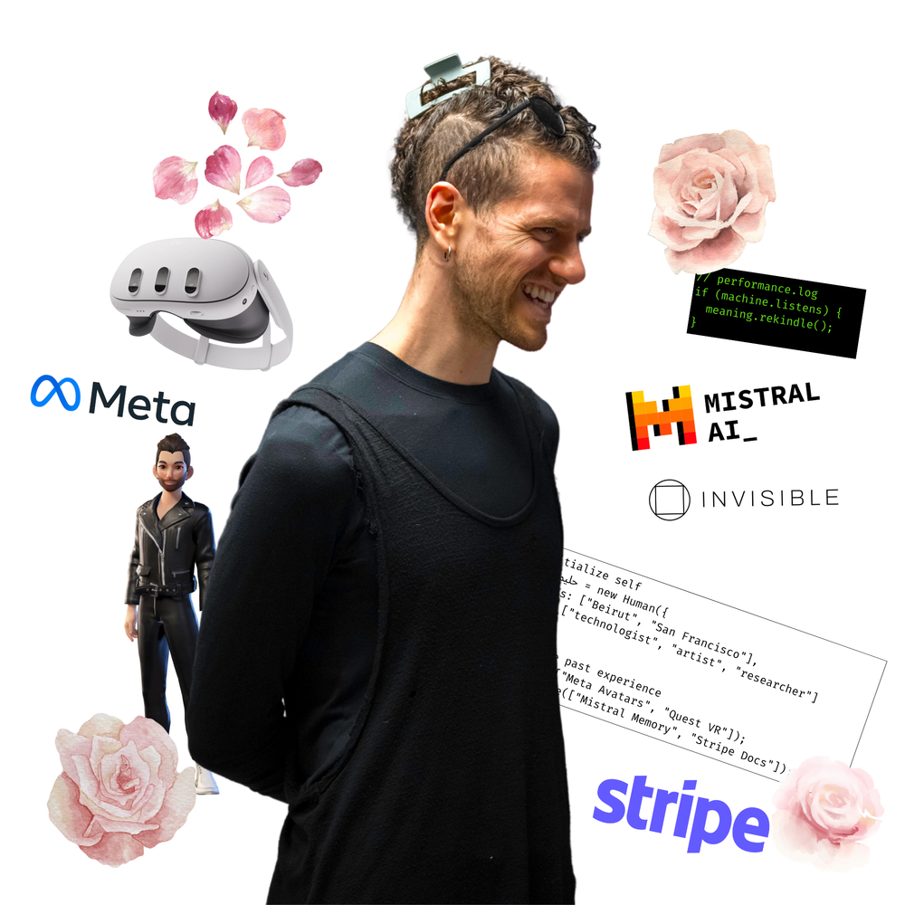
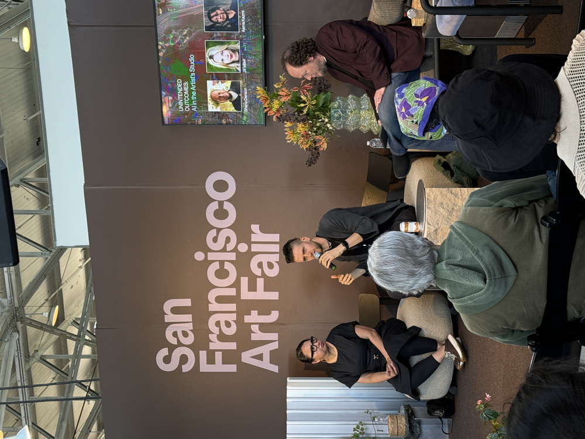
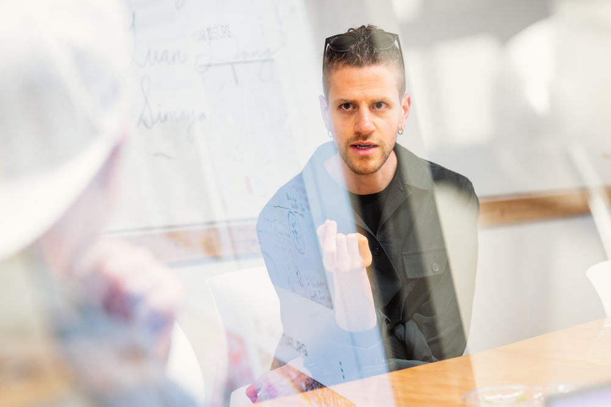

future v.
Hi! My name's حليم Halim [ha-LIM]. I'm a technologist, artist and researcher. As a technologist, I helped shape the future of AI, digital expression and developer experience. I helped launch Meta Avatars and Quest VR, reimagining digital presence across billions of lives, equipped Mistral's LLM chatbot with memory and improved Stripe's documentation.
As a poet, performer and artist, I now explore the intersection of code, language, and the body. If screens are the modern bonfire, I'm telling stories nearby, rekindling meaning, agency and connection within human-machine interactions.
Contact Halim
Works
As an artist and researcher, I explore what language remembers. I build poems, performances, and systems that rewire our ways of relating, to machines, to each other, to the past. The work lives between code and care, protocol and prayer. It listens. It glitches. Sometimes, it grows teeth!
Project Highlights
We Called Us Poetry — Jun '25, Electronic Literature Conference, Toronto
Keynotes
I work at the intersection of language, memory, and machine logic. My talks explore how AI systems encode values, mirror culture, and reshape how we think and relate. These aren't lectures. They're provocations designed to challenge defaults, expand perspective, and open space for new kinds of leadership.
Explore Keynotes
AI in the Artist Studio — Oct '25, San Francisco Art Fair
Workshops
These sessions are hands-on environments for leaders and teams on one hand, and artists and poets on the other, to engage directly with emerging AI tools and ways of thinking. We explore creative strategy, ethical design, and how to build with attention. The goal is literacy, alignment, and a renewed sense of agency in a shifting technological landscape.
Hands-On Sessions
Time Capsule in 3 Acts — May '25, Stanford D School